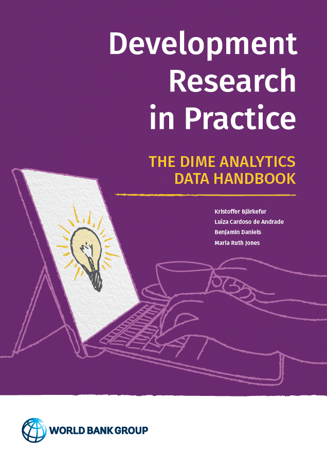

Development Research in Practice
The DIME Analytics Data Handbook
Welcome

Published by
DIME Analytics
This eBook is compiled directly from repository for this book. The current version was compiled from this commit.
The PDF version of the 2021 publication of this book can be found here.
Released under a Creative Commons Attribution 4.0 International (CC BY 4.0) license.